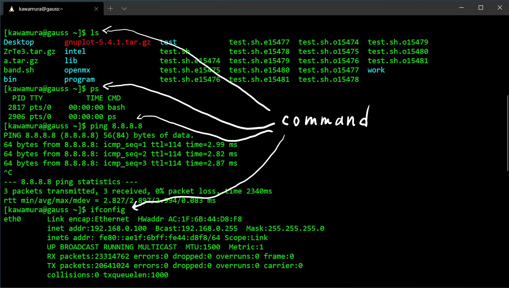

大規模な(重い)数値計算を行うときにはスーパーコンピューターや、それより小規模なワークステーションを用いる。
それらのコンピューターでは大抵の場合LinuxというOSが使われている。
とくに遠隔でLinuxを使う場合には、マウスをつかって色々なウィンドウ操作(グラフィカルユーザーインターフェース, GUI)を行うことはあまり無く、
下の図のようにターミナルという、テキスト入力と表示だけができる箱のようなものを使ってキーボードのみで操作をする。
これをキャラクター(もしくはコンソール)ユーザーインターフェース(CUI)あるいはコマンドラインインターフェース(CLI)という。

CUIでコンピューターの操作のために入力するワードの事をコマンドという。
コマンドはたくさんあり、自分で作ることもできる。
それぞれのコマンドがどういう役割かを覚えるのは大変かもしれないが、よく使うコマンドは勝手に覚えていくのではないかと思う。
遠隔のマシン(リモートホスト)に合わせて、自分が操作するPCにもCUI環境を整えておいた方が便利である。 そのための設定をまず初めに行う。
普段からLinuxをPCで使っている場合には、既にコマンドライン操作にも慣れていると思われるので、特段のチュートリアルは必要ない。
iMacやMacBookを使っている場合には、ターミナルを用いてコマンドライン操作を行う。 macOSはUNIXの亜流のひとつであり、LinuxもUNIX互換として生まれた(歴史についてはWikipedia等を参照)ので、両者はコマンド等が似ている。
WindowsにもコマンドプロンプトやPowershellといったCUIが備わっているが、使われているコマンドなど(Windowsではコマンドレットと呼ばれる)がLinuxのものと大きく異なるので、 それとは違う別の仕組みを用いる。 それはWindows Subsystem Linux (WSL)というもので、Windows10の途中から導入された。 WSLにはWSL1とWSL2があるが、2021/2現在の私の主観ではWSL1の方が使い勝手が良いと思う。 スペックの低いPCでWSL2を使ったときに、動作がもっさりするという事例があった。 Windows10の最近のバージョンではWSL2がデフォルトになっているので、でデフォルトをWSL1に変える操作を途中で行う。 ただし、既にWSL2を使って慣れている場合にはあえて変える必要はない。 WSL1⇔WSL2の変更はインストール後でもいつでも簡単にできる。
WSLのインストールにはこの記事が参考になる。
初心者のためのWSL( 1 ) ~初期設定,CUI設定編~
wsl --set-default-version 1
kawamura@kawamura:~$ set[ここでTabを2回押す]
set setcap setfont setleds setmetamode setsid setupcon setvtrgb
setarch setfacl setkeycodes setlogcons setpci setterm setvesablank setxkbmap
ssh-keygen -t rsa
kawamura@kawamura:~$ ls .ssh
id_rsa id_rsa.pub
kawamura@kawamura:~$ cat .ssh/id_rsa.pub
ssh-rsa AAA長いランダムな文字列7gH kawamura@kawamura
ln -fs /mnt/c/Users/Windowsでのユーザー名/ ~/win
kawamura@kawamura:~$ ls ~/win/
'3D Objects' NetHood
AppData OneDrive
'Application Data' Pictures
Contacts PrintHood
Cookies Recent
Desktop Roaming
Documents 'Saved Games'
Downloads Searches
Dropbox SendTo
Favorites 'Start Menu'
IntelGraphicsProfiles Templates
Links Videos
'Local Settings' ntuser.dat.LOG1
MicrosoftEdgeBackups ntuser.dat.LOG2
Music ntuser.ini
'My Documents' program
NTUSER.DAT source
NTUSER.DAT{2a070628-fbcc-11ea-8b2e-e815d635c81c}.TM.blf work
NTUSER.DAT{2a070628-fbcc-11ea-8b2e-e815d635c81c}.TMContainer00000000000000000001.regtrans-ms 'スタート メニュー'
sudo apt install gnuplot
ssh -Y ユーザー名@gauss.issp.u-tokyo.ac.jp
The authenticity of host 'gauss.issp.u-tokyo.ac.jp (157.82.227.175)' can't be established.
RSA key fingerprint is SHA256:文字列.
Are you sure you want to continue connecting (yes/no)?
#!/bin/sh
#PBS -l nodes=1
#PBS -n
cd $PBS_O_WORKDIR
echo "test job"
date
hostname
pwd
sleep 30
date
qsub sample.sh
qstat -a
[kawamura@gauss work]$ qstat -a
gauss:
Req'd Req'd Elap
Job ID Username Queue Jobname SessID NDS TSK Memory Time S Time
----------------------- ----------- -------- ---------------- ------ ----- ------ ------ --------- - ---------
15754.gauss kawamura default sample.sh 21544 1 1 -- -- R 00:00:00
#!/bin/sh
#PBS -l nodes=1:ppn=28
#PBS -n
cd $PBS_O_WORKDIR
mpiexec -hostfile $PBS_NODEFILE hostname